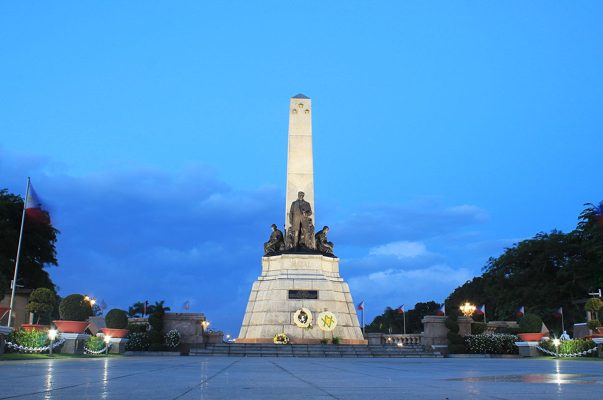
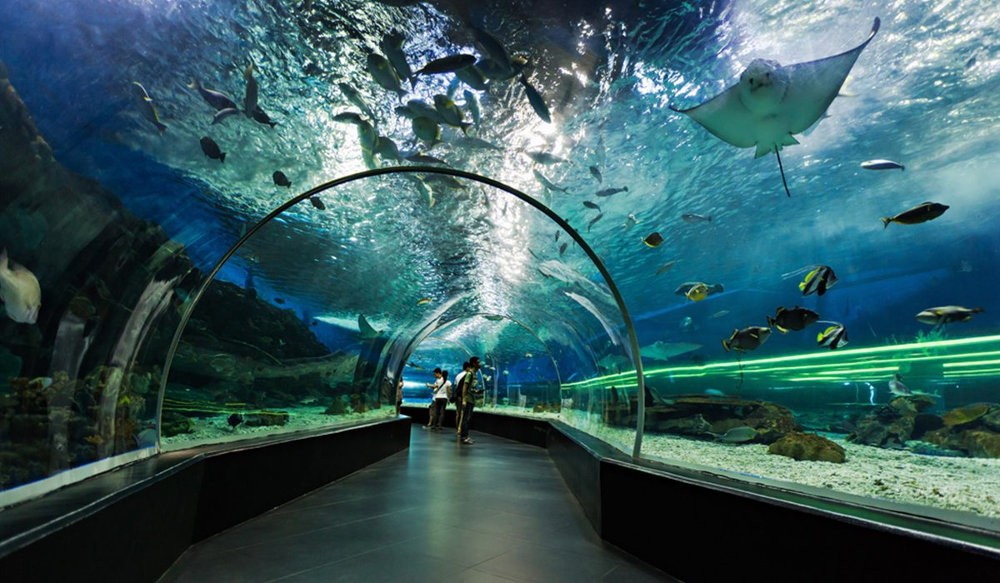
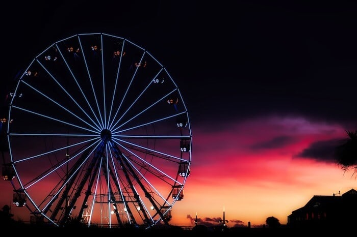

WELCOME TO MANILA
Manila, capital and chief city of the Philippines. The city is the centre of the country's economic, political, social, and cultural activity. It is located on the island of Luzon and spreads along the eastern shore of Manila Bay at the mouth of the Pasig River.
Manila has been the principal city of the Philippines for four centuries and is the centre of its industrial development as well as the international port of entry. Manila, the capital of the Philippines, is a densely populated bayside city on the island of Luzon, which mixes Spanish colonial architecture with modern skyscrapers. Intramuros, a walled city in colonial times, is the heart of Old Manila. It’s home to the baroque 16th-century San Agustin Church as well as Fort Santiago, a storied citadel and former military prison.
Photo


  Home
History
Destinations
Blog
Contact Us
Home
History
Destinations
Blog
Contact Us